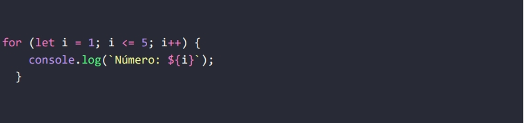
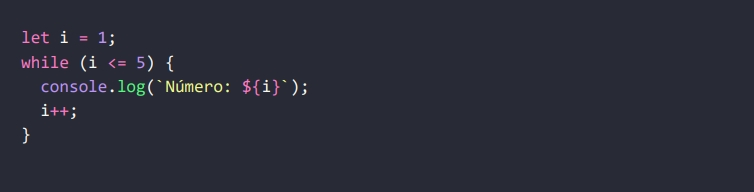
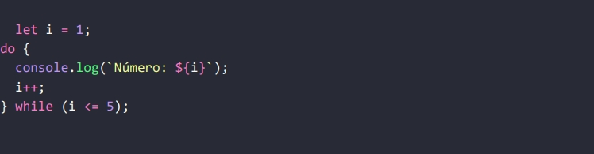

Estrutura de Repetição Javascript
As estruturas de repetição são ferramentas essenciais em programação, usadas para executar um bloco de código várias vezes de forma controlada. Elas são compostas por uma inicialização, uma condição de continuidade e uma atualização, garantindo que o processo avance corretamente.
Existem loops determinados, que repetem um número fixo de vezes, e indeterminados, que dependem de condições variáveis. Também há estruturas para iterar por coleções, como listas e objetos. Embora úteis, é importante atenção para evitar loops infinitos, garantindo eficiência e segurança no código.
Estrutura For
A estrutura for é utilizada quando sabemos o número exato de iterações que queremos realizar. Ela começa com a inicialização de uma variável de controle, seguida pela condição que será avaliada antes de cada execução do bloco de código. Após cada execução, a variável de controle é atualizada (normalmente com um incremento ou decremento). Por exemplo, se quisermos imprimir os números de 1 a 5, podemos usar o for da seguinte forma:

Neste exemplo, i começa em 1, a condição i <= 5 é verificada antes de cada iteração, e a cada ciclo i é incrementado em 1. Quando i se torna 6, a condição falha e o loop para.
Estrutura While
Já o while é usado quando não sabemos exatamente o número de iterações, mas sabemos que queremos repetir o código enquanto uma condição for verdadeira. A condição é verificada antes da execução do código, o que significa que, se a condição for falsa no início, o bloco de código pode não ser executado. Por exemplo, para imprimir os números de 1 a 5 com um while, podemos escrever:

Aqui, a variável i começa em 1, e o código continua executando enquanto i for menor ou igual a 5. A cada iteração, i é incrementado até que a condição se torne falsa, interrompendo o loop.
Estrutura Do...While
Por fim, o do...while é uma estrutura semelhante ao while, mas com uma diferença importante: o bloco de código dentro do do é executado pelo menos uma vez, independentemente da condição, pois a verificação ocorre depois da execução. Um exemplo seria:

Neste caso, o código sempre executa pelo menos uma vez, mesmo que a condição já fosse falsa no início. A condição é checada no final de cada iteração.
Essas três estruturas de repetição são extremamente úteis para automatizar tarefas e processar grandes volumes de dados sem a necessidade de escrever código repetido. Cada uma delas tem seu propósito, dependendo do tipo de situação em que você se encontra, seja quando você conhece o número exato de iterações (for), quando precisa de uma condição dinâmica que pode mudar a cada ciclo (while), ou quando deseja garantir que o código execute ao menos uma vez (do...while).